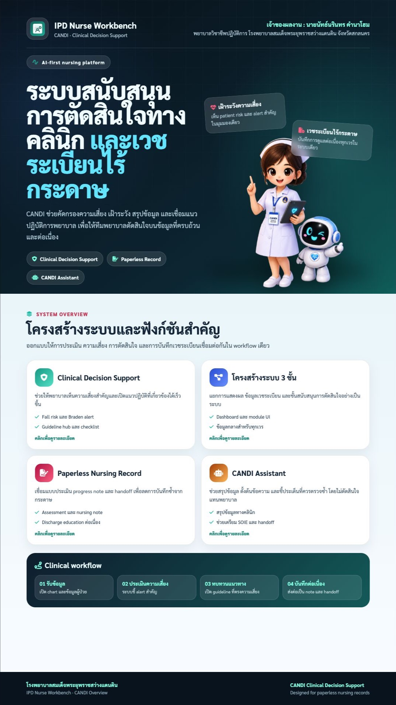

พัฒนาคุณภาพ
ก่อนพัฒนาเทคโนโลยี
การปรับปรุงคุณภาพการบันทึกเวชระเบียนทางการพยาบาลด้วยระบบสนับสนุนการตัดสินใจทางคลินิก โดยใช้ CANDI เป็น “เครื่องมือของ CQI” เพื่อแก้ปัญหาจากกระบวนการทำงานจริง

ปัญหาหลักคือ “คุณภาพของข้อมูล” ไม่ใช่เพียง “รูปแบบกระดาษ”
อ่านข้อมูลยาก
การบันทึกด้วยลายมือมีข้อจำกัดต่อความชัดเจนและการสื่อสารข้อมูล
ข้อมูลกระจาย
Assessment, risk และ nursing note ไม่ได้เชื่อมอยู่ใน workflow เดียว
บันทึกซ้ำ
ผู้ปฏิบัติต้องถ่ายทอดข้อมูลเดิมหลายตำแหน่งในกระบวนการดูแล
ใช้ข้อมูลเพื่อ “บันทึก” มากกว่า “ตัดสินใจ”
แนวทางดูแลและสัญญาณความเสี่ยงไม่ได้อยู่ใกล้จุดตัดสินใจเสมอ
ตัวชี้วัดตั้งต้นที่สะท้อนช่องว่างด้านคุณภาพการสื่อสารผ่านเวชระเบียนทางการพยาบาล
เมื่อมองเป็นกระบวนการ ปัญหาไม่ได้เกิดจาก “คน” จุดเดียว
จึงวิเคราะห์ปัญหาในระดับ workflow และ information flow เพื่อหาจุดที่ควรปรับปรุง
เป้าหมายการพัฒนาคือ “คุณภาพการบันทึก” ที่สนับสนุนการดูแล
ใช้วงจร CQI เป็นแกน และพัฒนาเทคโนโลยีเฉพาะจุดที่จำเป็น
การปรับปรุงไม่ได้มี “CANDI” อย่างเดียว แต่เป็นชุดการเปลี่ยนแปลง
ปรับ workflow การบันทึก
เชื่อม Assessment → Focus → Progress Note → Education → Handoff
จัดโครงสร้างข้อมูล
ทำให้รูปแบบการบันทึกและข้อมูลสำคัญมีโครงสร้างเดียวกัน
เพิ่ม decision support
แสดง risk alert, guideline และเครื่องมือช่วยร่างข้อมูลใกล้จุดตัดสินใจ
แล้ว “นวัตกรรม” อยู่ตรงไหน?
อยู่ที่การแปลงปัญหาคุณภาพให้เป็นเครื่องมือที่ใช้ได้จริงใน workflow ของพยาบาล
Risk Alert
เห็นสัญญาณความเสี่ยงสำคัญในบริบทของผู้ป่วย
Structured Record
จัดข้อมูลการบันทึกให้ค้นและทบทวนได้ง่ายขึ้น
CANDI Assistant
ช่วยสรุปและตั้งต้นข้อความโดยมีพยาบาลตรวจสอบ
Copy-to-form
ลดการถ่ายทอดข้อความซ้ำระหว่างโมดูล

ประเมินทั้ง “คุณภาพของงาน” และ “ประสบการณ์ของผู้ใช้”
คุณภาพการบันทึก
ตรวจสอบความชัดเจน/ความเป็นโครงสร้างของข้อมูล
การยอมรับของผู้ใช้
ประเมินความพึงพอใจต่อ scoring และ alert
เวลาในการทำงาน
ติดตามเวลาที่ผู้ใช้รายงานว่าลดลง
ความเป็นไปได้
พิจารณาความสอดคล้องกับ workflow จริง
ผลลัพธ์ที่เห็นชัด: ระบบช่วยให้ “เห็น” และ “เริ่มบันทึก” ได้ง่ายขึ้น
ผลที่ได้ชี้ให้เห็น “ความเป็นไปได้ในการปรับปรุง”
สิ่งที่เปลี่ยนไปไม่ใช่แค่ “หน้าจอ” แต่คือรูปแบบการทำงาน
ก่อนพัฒนา
ค้นข้อมูลหลายจุด · ประเมินแยกส่วน · บันทึกซ้ำ · ส่งต่อด้วยการสรุปใหม่
หลังปรับกระบวนการ
ข้อมูลผู้ป่วยอยู่ในบริบทเดียว · risk alert อยู่ใกล้จุดประเมิน · note มีโครงสร้าง
ผลต่อการทำงาน
ลดขั้นตอนที่ไม่จำเป็น · เริ่มบันทึกได้ง่ายขึ้น · ข้อมูลพร้อมส่งต่อและทบทวน
CQI ที่ดีต้องพูดทั้ง “สิ่งที่ดีขึ้น” และ “สิ่งที่ยังต้องพิสูจน์”
Workflow มาก่อน Technology
เมื่อเข้าใจ pain point ของผู้ปฏิบัติ การออกแบบระบบจึงตอบโจทย์การใช้งานมากขึ้น
ข้อมูลต้องเชื่อมกัน
คุณค่าของระบบเกิดจากการเชื่อม assessment, risk และ documentation ไม่ใช่จาก feature รายตัว
ต้องวัด outcome ให้มากขึ้น
รอบต่อไปควรเพิ่ม objective time-on-task, documentation quality และผลลัพธ์ทางคลินิกที่เกี่ยวข้อง
จาก “โครงการ” สู่ “วงจรปรับปรุงคุณภาพประจำงาน”
มาตรฐานงาน
กำหนด workflow และแนวทางการบันทึกที่ชัดเจน
ติดตามตัวชี้วัด
ทบทวนคุณภาพเวชระเบียนและ feedback เป็นระยะ
พัฒนาผู้ใช้
สร้างความเข้าใจร่วมเรื่อง documentation + clinical reasoning
ขยายผล
ทดสอบกับหน่วยงานอื่นตามบริบท โดยประเมินความเหมาะสมก่อนขยาย
“CANDI ไม่ใช่พระเอกของ CQI”
พระเอกคือการเปลี่ยนแปลงกระบวนการบันทึกให้มีคุณภาพ ต่อเนื่อง และสนับสนุนการตัดสินใจ ส่วน CANDI คือเครื่องมือที่ทำให้การเปลี่ยนแปลงนั้นเกิดขึ้นในงานจริง